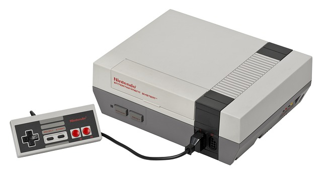
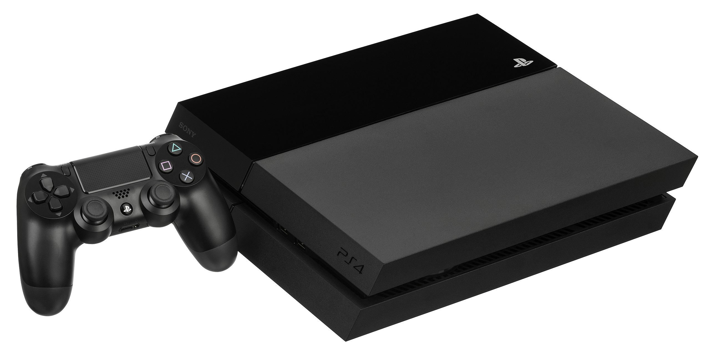
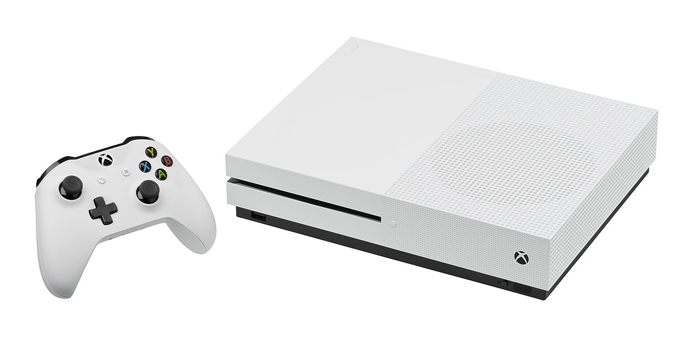
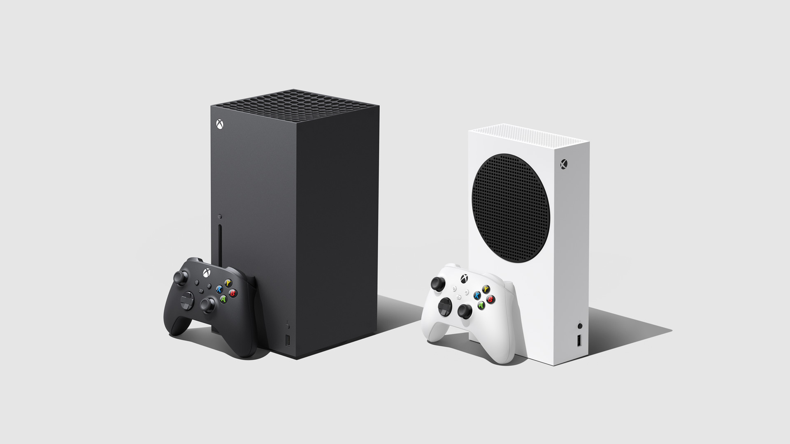

Era dos Pioneiros
Os pioneiros dos videogames abriram caminho para a indústria que conhecemos hoje, começando com invenções simples mas inovadoras. Nos anos 1950, surgiram os primeiros experimentos em jogos eletrônicos, como "OXO", um jogo de velha criado por Alexander S. Douglas, e "Tennis for Two", desenvolvido por William Higinbotham em 1958, onde os jogadores usavam um osciloscópio para simular uma partida de tênis. Esses primeiros experimentos, ainda rudimentares, foram importantes por demonstrar a possibilidade de interatividade entre homem e máquina.
Em 1962, "Spacewar!" foi desenvolvido por Steve Russell no MIT, tornando-se um dos primeiros jogos de computador programados especificamente para diversão. "Spacewar!" rapidamente se espalhou em universidades e inspirou uma nova geração de programadores a explorar o potencial dos jogos eletrônicos. Esses desenvolvimentos criaram a base para o que viria a seguir.
O lançamento do "Pong", pela Atari, em 1972, marcou um ponto crucial. "Pong" foi o primeiro sucesso comercial significativo, e logo se popularizou nos arcades, levando à criação de uma nova indústria de entretenimento. O sucesso do "Pong" pavimentou o caminho para o Atari 2600, lançado em 1977, que revolucionou o conceito de consoles domésticos, trazendo os videogames para dentro de casa e iniciando uma era de inovação.
Era dos 8-bits
Nintendo Entertainment System (NES)
O NES, lançado em 1985, foi um divisor de águas para a indústria dos videogames. Desenvolvido pela Nintendo, ele revitalizou o mercado após a crise dos videogames em 1983, trazendo uma nova onda de inovação. O grande sucesso do NES veio principalmente por sua vasta biblioteca de jogos inovadores, como Super Mario Bros., que se tornou um marco na história dos videogames. O console estabeleceu novos padrões para jogabilidade e design, introduzindo mecânicas que seriam amplamente replicadas nos anos seguintes. Além de Super Mario, títulos como The Legend of Zelda e Metroid emergiram durante essa fase, criando franquias duradouras. O controle simples de dois botões, aliado à capacidade de reproduzir jogos cativantes, fez do NES um sucesso mundial, consolidando a Nintendo como uma das líderes do mercado de videogames.
Sega Master System
Enquanto o NES dominava em várias partes do mundo, o Sega Master System, lançado pela Sega em 1986, também fez história na era dos 8-bits. Desenvolvido para competir com a Nintendo, o Master System enfrentou desafios em mercados como o japonês e o norte-americano, mas teve grande sucesso em regiões como a Europa e o Brasil. O console oferecia gráficos superiores ao NES, proporcionando uma experiência visual mais rica. Jogos como Alex Kidd in Miracle World, que foi o mascote não oficial da Sega antes de Sonic, foram destaques, atraindo jogadores com desafios únicos. Elogiado por sua capacidade técnica e durabilidade, o Master System conseguiu se manter relevante em mercados onde outros consoles não conseguiram entrar. Assim como o NES, o Master System desempenhou um papel crucial em moldar o futuro da indústria de videogames.

A Era dos 16-bits
Super Nintendo Entertainment System (SNES)
Lançado pela Nintendo em 1991, o Super Nintendo Entertainment System (SNES) ofereceu gráficos avançados e uma trilha sonora impressionante para a época, estabelecendo novos padrões para os videogames. O SNES rapidamente conquistou os jogadores com títulos icônicos como Super Mario World, The Legend of Zelda: A Link to the Past, Super Metroid e Donkey Kong Country. O console também introduziu o Super FX chip, permitindo gráficos 3D rudimentares em jogos como Star Fox, o que foi uma grande inovação na época. Além disso, a Nintendo continuou a focar em experiências de jogo envolventes e narrativas ricas, garantindo ao SNES um lugar especial na história dos videogames. O impacto do SNES na indústria foi substancial, com seu design e jogos influenciando profundamente a geração de consoles subsequente.

Sega Mega Drive
O Sega Mega Drive (conhecido como Genesis na América do Norte) foi lançado em 1989 e se tornou o console que impulsionou a Sega para a liderança da indústria de videogames. Oferecendo gráficos mais avançados e uma jogabilidade mais rápida que seus concorrentes, o Mega Drive atraiu um vasto público. Em 1991, Sonic the Hedgehog foi lançado, tornando-se o mascote da Sega e um ícone da era dos 16-bits. Além de Sonic, o Mega Drive trouxe títulos populares como Streets of Rage, Altered Beast e Golden Axe, ajudando a consolidar sua base de fãs. A Sega adotou uma estratégia de marketing agressiva, focada em jogadores mais velhos e destacando jogos mais desafiadores e com visuais aprimorados, o que fez com que o console fosse amplamente reconhecido como uma plataforma para jogos de ação intensa.

A Rivalidade Mega Drive vs SNES
A competição entre o Mega Drive e o SNES foi uma das mais intensas da história dos videogames, com ambas as empresas lutando para oferecer melhores jogos e tecnologias mais avançadas. A Sega buscou atrair jogadores mais velhos com um estilo de marketing "radical", enquanto a Nintendo permaneceu fiel à sua abordagem de jogos familiares e acessíveis. Essa rivalidade incentivou o lançamento de alguns dos melhores jogos da história, cada empresa tentando superar a outra em inovações e criatividade.
A Era dos 32/64-bits
PlayStation
O PlayStation, lançado pela Sony em 1994, revolucionou a indústria dos videogames ao introduzir o uso de CDs como mídia principal para jogos. Essa mudança permitiu um armazenamento muito maior do que os cartuchos de jogos, possibilitando a inclusão de gráficos mais detalhados, áudio de alta qualidade e uma narrativa mais rica. Com uma vasta biblioteca de títulos inovadores, como Final Fantasy VII e Metal Gear Solid, o PlayStation se destacou no mercado. Final Fantasy VII trouxe um mundo expansivo e uma narrativa épica, enquanto Metal Gear Solid trouxe uma abordagem cinematográfica, estabelecendo novos padrões para a narrativa e jogabilidade.
Leia Mais
O sucesso do PlayStation ajudou a solidificar a Sony como uma força dominante no mercado de videogames, marcando sua entrada triunfante no setor. O console não apenas se tornou um dos mais vendidos de todos os tempos, mas também pavimentou o caminho para a evolução dos jogos eletrônicos, influenciando profundamente o desenvolvimento de futuros consoles e jogos. A inovação tecnológica e a abordagem centrada no jogador do PlayStation definiram um novo padrão para a indústria, contribuindo para a popularização dos videogames como forma de entretenimento global.

Nintendo 64
O Nintendo 64, lançado em 1996, trouxe uma nova era de gráficos 3D para os videogames, oferecendo uma experiência visual mais rica e imersiva. Este console inovador apresentou um design revolucionário e jogos que redefiniram o potencial dos jogos 3D, como Super Mario 64 e The Legend of Zelda: Ocarina of Time. Super Mario 64 foi um marco na jogabilidade tridimensional, permitindo aos jogadores explorar um vasto mundo aberto e interagir com um ambiente detalhado. The Legend of Zelda: Ocarina of Time continuou essa inovação com uma narrativa envolvente e um mundo expansivo que estabeleceu novos padrões para o design de jogos.
Leia Mais
Além disso, o Nintendo 64 introduziu o Rumble Pak, um acessório que oferecia feedback tátil durante o jogo, proporcionando uma nova dimensão de realismo e imersão. Essa inovação foi pioneira na criação de uma experiência de jogo mais envolvente e física, amplamente adotada por outros consoles. Com suas inovações tecnológicas e design visionário, o Nintendo 64 deixou um legado duradouro na indústria de videogames. Seu impacto foi significativo na forma como os jogos 3D foram abordados, estabelecendo uma base sólida para futuras inovações na tecnologia de jogos.

Sega Saturn
O Sega Saturn, lançado em 1997, tentou competir com o PlayStation e o Nintendo 64 oferecendo gráficos 3D avançados e uma biblioteca diversificada de jogos. O console foi projetado para fornecer uma experiência de jogo de alta qualidade, com gráficos detalhados e jogabilidade envolvente. Destacou-se com títulos notáveis como Nights into Dreams e Virtua Fighter 2, que aproveitaram ao máximo a tecnologia de 32-bits da Sega. Nights into Dreams ofereceu uma experiência visual única e uma jogabilidade inovadora, enquanto Virtua Fighter 2 se tornou um dos jogos de luta 3D mais influentes da época. Apesar das inovações, o Saturn teve dificuldades de marketing e suporte de jogos.
Leia Mais
O lançamento antecipado e a falta de suporte robusto impactaram seu desempenho no mercado. No entanto, a abordagem audaciosa da Sega e os jogos inovadores proporcionaram uma experiência de jogo distinta e memorável. Sua tecnologia avançada e os títulos marcantes contribuíram para a evolução dos videogames e ajudaram a moldar a indústria. O legado do Saturn ainda é celebrado e apreciado por muitos entusiastas, refletindo a influência duradoura que o console teve sobre o mundo dos jogos eletrônicos. Mesmo com uma vida útil mais curta, o Saturn é lembrado com carinho e reverência por sua contribuição única à história dos videogames.

A Era dos Consoles Modernos
PlayStation 2
O PlayStation 2, lançado pela Sony em 2000, é até hoje o console mais vendido de todos os tempos. Com uma vasta biblioteca de jogos, que incluiu títulos inovadores como Grand Theft Auto III e Tekken 5, o PS2 ofereceu uma experiência imersiva e variada. Além disso, o console teve a capacidade de reproduzir DVDs, o que o tornou uma opção popular não apenas para jogos, mas também para entretenimento doméstico. Sua longa vida útil e seu impacto na indústria estabeleceram a Sony como uma das principais líderes no mercado de consoles.

Xbox
A Microsoft entrou no mercado de consoles com o Xbox em 2001. Seu principal diferencial foi o lançamento do Xbox Live, que popularizou o jogo online nos consoles, oferecendo uma nova forma de interação entre os jogadores. O Xbox também trouxe jogos marcantes, como Halo: Combat Evolved, que redefiniu o gênero de jogos de tiro em primeira pessoa e ajudou a criar uma comunidade dedicada em torno da franquia. Com o Xbox, a Microsoft iniciou sua trajetória de sucesso no mundo dos videogames.

Nintendo Wii
O Nintendo Wii, lançado em 2006, foi revolucionário com a introdução dos controles de movimento, permitindo uma experiência de jogo interativa e acessível. O console foi capaz de atrair não apenas jogadores tradicionais, mas também novos públicos, incluindo famílias e pessoas que não costumavam jogar videogame. Títulos como Wii Sports e The Legend of Zelda: Twilight Princess destacaram a versatilidade do Wii, que se tornou um sucesso global, redefinindo a forma como os jogos eram jogados.

PlayStation 4
O PlayStation 4, lançado em 2013, trouxe uma geração de gráficos avançados e uma experiência mais focada em jogos online e conteúdo digital. Ele se destacou por sua potência de hardware e uma ampla gama de jogos exclusivos, como Bloodborne e Uncharted 4, que consolidaram a posição do PS4 como o principal console da geração. A Sony continuou sua trajetória de sucesso, oferecendo uma plataforma centrada em jogos e experiência imersiva.
Xbox One
Também lançado em 2013, o Xbox One apostou na integração entre o console e o sistema Windows, além de oferecer serviços como o Xbox Game Pass, que disponibilizou uma vasta biblioteca de jogos via assinatura. Embora tenha enfrentado desafios em seu início devido ao foco em funções de entretenimento não relacionadas a jogos, o Xbox One eventualmente ganhou espaço com títulos como Forza Horizon 4 e Gears 5, além de sua comunidade robusta de jogadores online através do Xbox Live.
A Era dos Consoles de Nova Geração
PlayStation 5
O PlayStation 5, lançado em 2020, trouxe uma nova dimensão aos videogames com seu foco em gráficos 4K, altas taxas de quadros e tempos de carregamento extremamente rápidos, graças à tecnologia de SSD. O console também apresenta um novo controle, o DualSense, que oferece feedback háptico avançado e gatilhos adaptativos, proporcionando uma experiência mais imersiva. Jogos como Demon's Souls e Ratchet & Clank: Rift Apart mostraram o poder gráfico e a capacidade de processamento do PS5. A integração com jogos em nuvem e realidade virtual expandiu ainda mais as possibilidades de entretenimento da plataforma, consolidando o PlayStation 5 como um marco na evolução dos consoles.

Xbox Series X|S
Lançado no mesmo ano, o Xbox Series X|S apresentou duas opções distintas para a nova geração. O Xbox Series X focou em desempenho gráfico máximo, com suporte para 4K e até 120 FPS, enquanto o Xbox Series S ofereceu uma alternativa mais acessível com especificações mais modestas, mas ainda muito potentes. A Microsoft continuou a investir no ecossistema Xbox, com a integração do Xbox Game Pass e do xCloud, permitindo aos jogadores acesso a uma vasta biblioteca de jogos e streaming de alta qualidade. Títulos como Halo Infinite e Forza Horizon 5 demonstraram o poder da nova geração, e o suporte a jogos de gerações anteriores ajudou a manter uma base fiel e engajada de jogadores.
